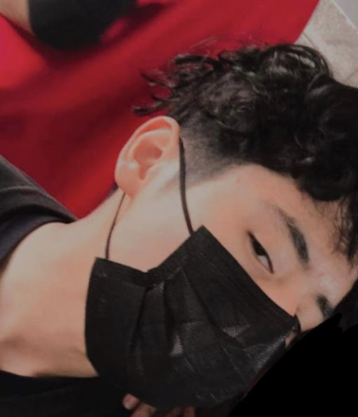

Diego Sebastian Baez Antunez
Datos Generales
Mi edad es de: 17
Mi especialidad: Sitios Web
Soy un chavo que tiene mucha creatividad y me gustaria poder superarme poco a poco ir demostrandole a mis papas de lo que soy capas de lograr y agradecerles por el apoyo que me brindan en el dia a dia
Mi objetivo es lograr acabar mis estudios con el titulo de contador.
Habilidades
Las cosas que yo aprendi fueron que se pueden hacer muchuisimos diseños,formularios y paguinas Web
Mis habilidades suaves o softskills son: actitud, comunicacion , idealizaciones, etc.
Lenguajes de programacion:JavaScript,Html,payhon, notpade++,etc.
Idiomas que manejo y el nivel: Español
Personal
En tres años me veo en la universidad estuduando la carrera que deseo estudiar, en 5 años espero ya haber acabado la universidad y tener mi titulo de contador, en 10 años me veo con la moto y camioneta que deseo tener con un buen traabajo.
A mi me gustaria dedicarme a ser conducator de autos de carrera
Contactos
dbaez100811@ppsc.edu.mx
telefono: 8187045577